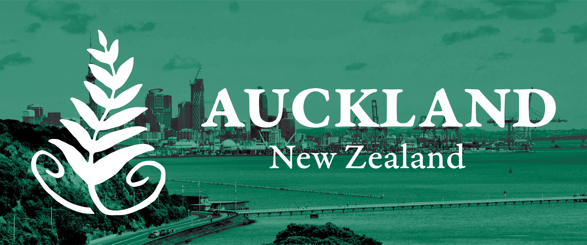
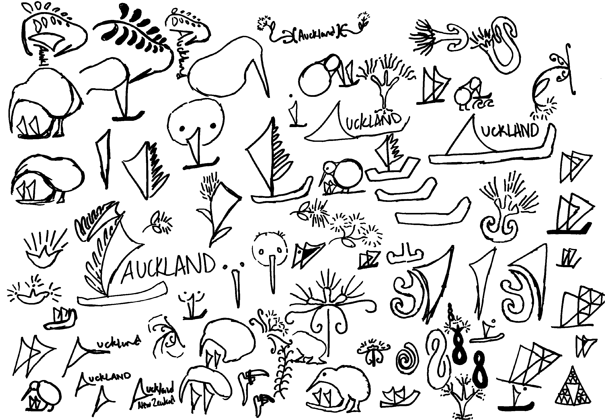
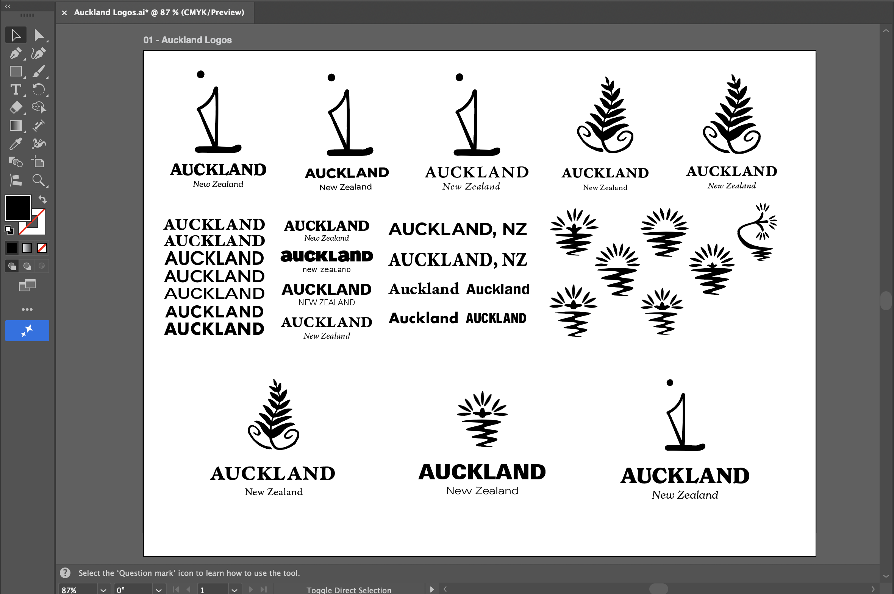
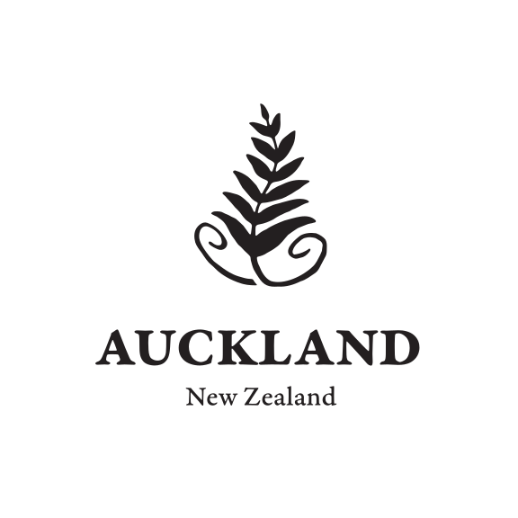
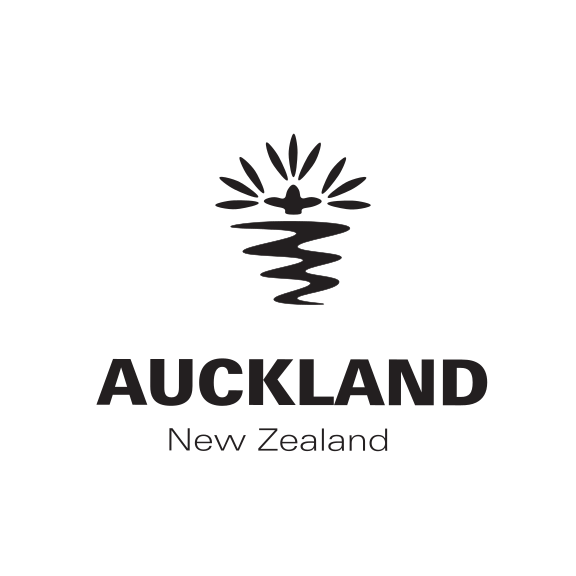
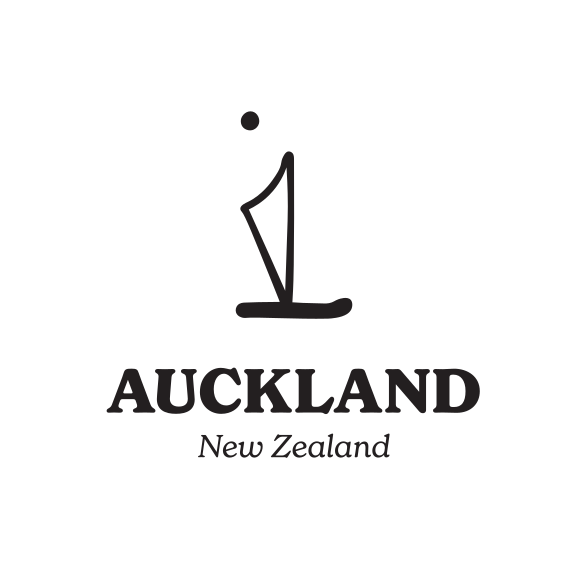
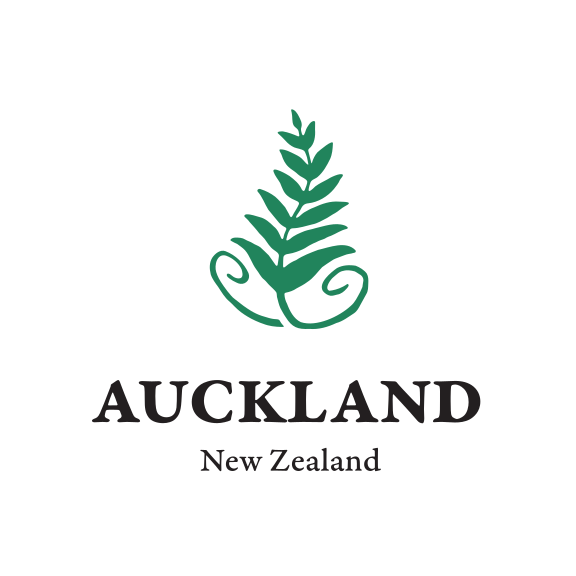
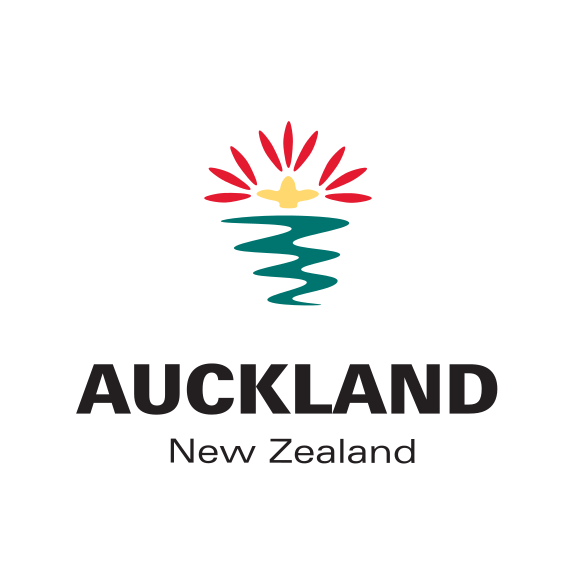
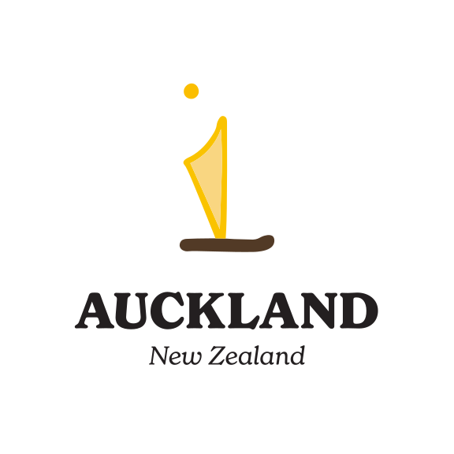
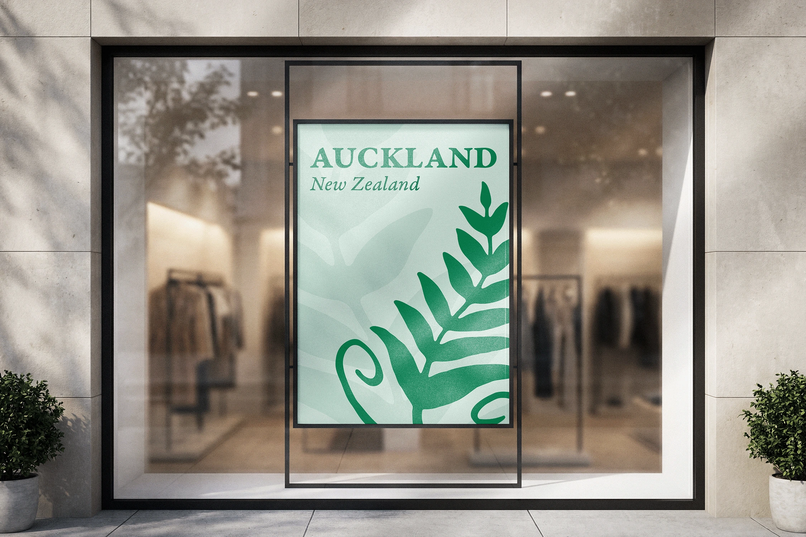

Auckland, NZ
Tourism Logo
For this project, I was tasked with designing a set of three distinct logos for Auckland, New Zealand’s tourism industry.
type:
Student Project
deliverable:
Logo Design
software:
Illustrator
skills:
Graphic Design, Illustration
Challenge
The challenge was creating a logo that could communicate a strong sense of place while remaining simple and versatile enough to work as a tourism brand. To me this meant avoiding an unimaginative depiction of Auckland's skyline or one single tourist attraction.
Solution
I chose to represent Auckland through symbols associated with Māori culture and New Zealand's native wildlife and environment rather than depicting the city literally. I felt that the culture and nature of the city were far more memorable and compelling than any one particular urban landmark.
The first concept combines a silver fern leaf with the Māori Mangōpare symbol, which depicts a hammerhead shark and represents the courage and determination of the Māori people. Since this logo uses an indigenous symbol, I did some research to make sure my use of it isn’t disrespectful or distasteful.
The second concept focuses on the Pōhutukawa flower, famously known as the New Zealand Christmas Tree. Beneath the flower are flowing lines meant to represent the ocean, as Auckland is a bustling port city with numerous beaches and offshore islands. The flower’s stylized petals also double as beams of sun rising over the horizon.
The third and final concept combines a Māori sailboat with the silhouette of a kiwi bird, with the sail doubling as the kiwi's beak, and the sun above representing its eye. I chose to include a sailboat in this logo because Auckland is nicknamed the City of Sails for its remarkably high boat ownership rate.
Sketch Samples

Design Iteration

Final Designs



Logos in Color




explore my other work